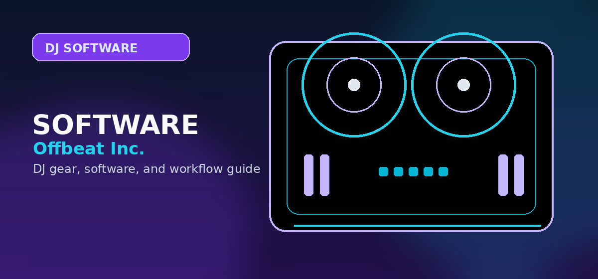

Best DJ Software for Beginners 2026 — Compared & Ranked
The 6 best DJ software options for beginners in 2026, compared side by side: price, features, learning curve, and hardware needs. Updated May 2026.

Disclosure: This page uses affiliate links. We may earn a commission at no extra cost to you. Full disclosure →
The best DJ software for beginners in 2026 makes it easy to mix your first tracks without overwhelming you with complexity. After testing six of the most popular options — from completely free to premium — we put together this side-by-side comparison to help you choose the right one for your budget and goals.
If you already own a DJ controller, your choice may be made for you (Serato and rekordbox bundle with many popular decks). If you're starting from scratch, DJ.Studio and Virtual DJ offer the most flexibility without hardware lock-in.
Comparison Table
| # | Software | Price | Best For | Learning Curve | Hardware Required | Beginner Fit | Verdict |
|---|---|---|---|---|---|---|---|
| 1 | Serato DJ Lite | Free | First-timers with a controller | Easy | Serato-certified controller | Controller bundles | ⭐ Industry standard |
| 2 | DJ.Studio | $9–$29/mo | Mix in browser, no hardware | Easy | None (browser) | No hardware | 🌟 Best online option |
| 3 | Virtual DJ | Free / $299 Pro | Versatile mixing + video DJs | Medium | Optional | Feature depth | 🔥 Feature-packed |
| 4 | rekordbox | Free / $9.99/mo | Club DJs & Pioneer hardware users | Medium | Pioneer DJ recommended | Club prep | 🎭 Club-ready prep |
| 5 | Traktor Pro 3 | $99 one-time | Creative mixing & 4-deck sets | Medium-High | Optional (NI controllers) | Creative effects | 🎬 Advanced creativity |
| 6 | Mixxx | Free | Zero-budget beginners | Medium | None required | Zero cost | 100% free, open source |
Detailed Reviews
Serato DJ Lite is bundled with dozens of beginner-friendly controllers from Pioneer DJ, Rane, and Denon. You get a polished, professional interface without paying extra for software — just buy the hardware.
Lite edition is limited to 2 decks and no sample slots. Upgrading to Serato DJ Pro ($9.99/mo or $199 one-time) unlocks the full feature set for serious use.
Anyone buying their first DJ controller in 2026. Serato is the most widely-supported software in DJ booths and at music schools.
Often included with entry-level controllers, so beginners can start without buying separate software.
If you're buying a controller, Serato Lite is likely included free. It's the industry standard that club-going DJs learn on, which makes your skills transferable anywhere.
DJ.Studio runs entirely in your browser — no download, no hardware required. It connects to Spotify, SoundCloud, and your local library, making it the fastest way to start mixing with tracks you already know.
Not for live performance — it's designed for pre-recorded mix creation. Subscription pricing means ongoing cost. Requires a stable internet connection for cloud features.
Beginners who want to start today without buying hardware. Great for podcasters, content creators, or anyone learning beatmatching theory before investing in gear.
No controller required; the browser-first workflow makes it easy to start before buying gear.
Lowest barrier to entry for beginners who want to experiment before buying gear. The browser workflow and zero-hardware requirement make it easy to learn arrangement, phrasing, and transitions first.
Virtual DJ's free Home version has almost no limitations for personal use — you get 2 decks, full effects, and broad controller support. The Pro upgrade ($299 one-time) is one of the best values in the industry for professional use.
Interface looks dated compared to Serato. Some features (like cloud library sync) require subscription add-ons. Not standard in clubs — expect to use Serato or rekordbox when performing out.
Beginners who want the most features for free. Also excellent for wedding DJs, mobile DJs, and video DJs — Virtual DJ has the best karaoke and video mixing features of any option here.
The free Home version gives beginners a huge feature set before any paid upgrade is necessary.
The most feature-complete free option. If you're not gigging at clubs and want maximum capability at zero cost, Virtual DJ's free tier is exceptional. The $299 one-time Pro price is also competitive long-term.
Rekordbox is Pioneer DJ's own software — and Pioneer DJ CDJ-2000NXS2 and CDJ-3000 players run rekordbox natively. If you plan to DJ in clubs, preparing your library in rekordbox is the industry move.
The free Export mode doesn't let you mix live with software — you need the $9.99/mo Performance Plan for that. Primarily useful if you own or plan to own Pioneer hardware.
Beginners who intend to progress to DJing at venues and clubs. Even if you're practicing at home with Virtual DJ now, building your library in rekordbox format is smart for the long run.
Free Export mode is useful for library prep, and the Pioneer ecosystem is the clearest path toward club-standard gear.
Essential for anyone serious about DJing at venues. Use it free for music library management and metadata analysis even if you perform on other software.
Traktor Pro 3 has the most powerful effects engine of any DJ software. 40+ studio-grade effects, 4-deck mixing, loop recorder — it's built for DJs who treat the mixer as an instrument.
Steeper learning curve than Serato or Virtual DJ. The interface can feel overwhelming to beginners. Native Instruments controllers (Traktor S4, S2) are expensive. The software market has some critics of NI's update cadence.
Intermediate beginners who want to build technical skills fast. Especially strong with electronic music genres (techno, house, DnB) where effect creativity is expected.
The one-time software price appeals to beginners who want creative effects without adding another subscription.
Worth the $99 one-time price for beginners who already know they want to go deep on creative mixing. The best effects system, period.
Mixxx is fully free, open-source, and has no feature limits. It supports 4 decks, sampler, effects, and works with most MIDI controllers out of the box. A genuine Serato/Virtual DJ alternative for zero-budget beginners.
UI is less polished than commercial options, and community support replaces paid customer service. Hardware mapping can also take more patience than the controller bundles from Serato or rekordbox.
Beginners on a strict budget, Linux users (Mixxx has better Linux support than any commercial option), and privacy-conscious DJs who prefer open-source software.
Free, open-source, and unrestricted. It is the strongest pick when the goal is learning fundamentals without spending anything.
If money is a real constraint, Mixxx is the answer. It has everything a beginner needs to learn the fundamentals of DJing without spending a dollar.
What to Look For in Beginner DJ Software
Before picking DJ software, three factors matter most for beginners:
If you already own a DJ controller, check which software it bundles with or supports natively. Serato and rekordbox are bundled with the most controllers.
Serato DJ Lite and DJ.Studio are the simplest to learn. Traktor Pro 3 has the steepest curve but the most creative ceiling.
Gigging at bars/clubs → learn Serato or rekordbox. Producing mixes from home → DJ.Studio or Virtual DJ. Electronic music artistry → Traktor Pro 3.
Summary: Best DJ Software for Beginners 2026
The best DJ software for beginners in 2026 depends on your specific situation:
- Buying your first controller? Get Serato DJ Lite — it's likely bundled free with your hardware.
- Want to start today with no gear? DJ.Studio runs in your browser right now.
- Need maximum features for free? Virtual DJ Home has no meaningful limitations.
- Planning to DJ in clubs? Learn rekordbox — it's the club standard.
- Into electronic music production? Traktor Pro 3 is the creative choice at $99.
- Zero budget, no compromises? Mixxx is genuinely excellent and completely free.
Shop on Amazon
Get a DJ controller that bundles with free software — check Amazon for current deals.
Learning Path and Progression
Most beginners follow this progression: months 1-3 learning beat-matching and mixing technique, months 3-6 mastering your chosen software's workflow, months 6-12 performing at small gigs to refine skills. Start with DJ.Studio or Serato Lite (no hardware needed) to learn fundamentals, then upgrade to a paid tier or full software once you're confident DJing is a genuine hobby. This phased approach saves money ($100-300 instead of $500) and prevents wasting funds on software you won't use after the novelty wears off.
Common Beginner Mistakes in Software Selection
The three biggest mistakes beginners make: (1) choosing software based on price alone instead of your actual use case, (2) buying complicated professional software (Traktor Pro 3) before mastering basics, (3) switching software every 2-3 months chasing "better tools" instead of deeply learning one platform. Stick with your chosen software for at least 6 months before judging it. Every DJ software has a learning curve; consistency beats tool-switching.
Setting Up Your Home Practice Environment
To practice effectively, you need: computer (Mac or Windows), DJ software, a DJ controller (optional but recommended), headphones with at least 32-ohm impedance, and ideally one pair of monitor speakers for mixing reference. Your bedroom is a perfectly valid practice space. Many pros started in bedrooms with $200 of gear. Invest in acoustically treating your space (soft materials, corner bass traps) only after 100+ practice hours — this improves mixing skill but isn't necessary for learning fundamentals.
Shop on Amazon
Get a DJ controller that bundles with free software — check Amazon for current deals.
Frequently Asked Questions
What should I check before choosing DJ software?
Check controller compatibility, library tools, streaming support, stem features, recording limits, subscription cost, and whether the software matches the venues or hardware you expect to use.
Can I start with free DJ software?
Yes, but free versions often restrict hardware, recording, effects, or advanced library features. Use free software to learn basics, then upgrade when the limitations slow you down.
Does DJ software choice affect controller choice?
Yes. Many controllers are built around rekordbox, Serato, Traktor, VirtualDJ, or djay. Choose the software path before buying hardware whenever possible.